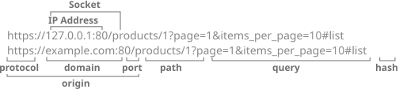
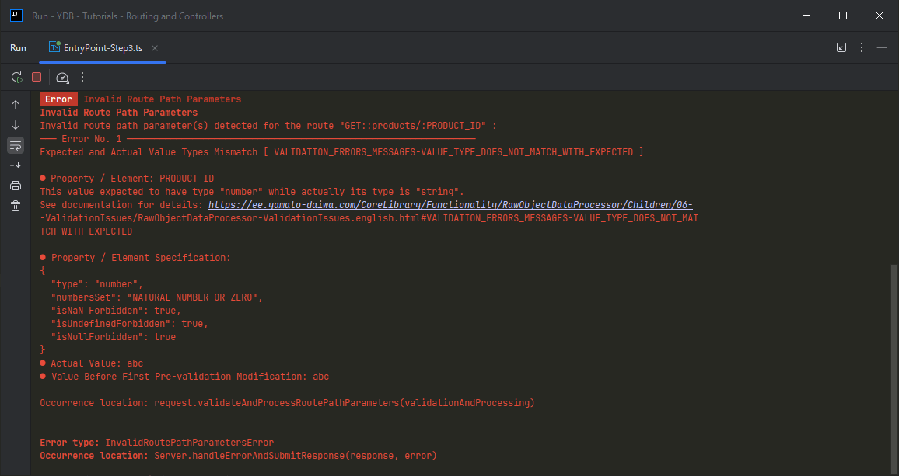
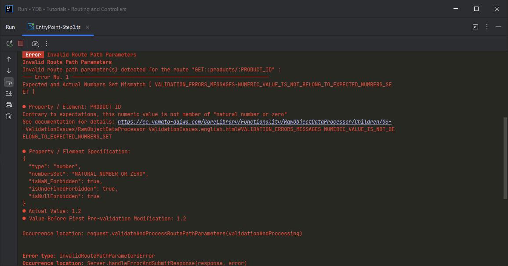

Routing and Controllers
Theory
URL, URN, URI
The difference between URL (Unified Resource Locator), URN (Unified Resource Name) and URI (Unified Resource Identifier) terms and also their decomposition could differ depending on information source. Although URL/URN/URI anatomy is the framework independent fundamental pre-required knowledge, we need to agree which terminology is actual for YDB framework.
First of all, we will not discuss the differences between URL and URL, just note that URI is the fullest entity including both of URL and URN (depending on information source, URL and URN parts could intersect or not).
Second, besides the web, the URL/URN/URI is applicable to local file system. Although it has single conception, here we are focused on web.
URI Anatomy
Consider the constituents of URI. For now we will focus on how we use these constituents rather than the canonical definitions, so the following glossary includes the descriptions, not definitions.

- Protocol
- Currently, we need the HTTP and HTTPS protocols.
- IP-адрес (IP address)
- For the local development case mostly it is the local IP Address (usually 127.0.0.1). When deploying the the site or application to the server, wil will the IP Address issued by the server provider. We can rent the domain name and bind it to this IP-адресу, then instead of the IP address it will be this domain name.
- Domain
- Domain Name
- The domain name is required mainly on production mode. Besides the technological aspect, the domain name is part of the branding. However, developing the website or web application, it is required to provide the easy migration to new domain (ideally, wihtout changes in the source code).
- Port
- Thanks to there are the plenty of ports, multiple web sites and/or web application could be hosted on the same server. Some of them is being used by software for various targets, but now we need one, maximally 2 ports (when both HTTP and HTTPS are supported) for the serving of HTTP requests.
- Socket
- The domain and port combination. If the port has the default number (for the specific protocol which is not the part of the socket), then the port could be omitted. For example,
https://example.com:443is same ashttps://example.com:443while the protocol isHTTPS. - Origin
- The combination of the protocol, domain and port.
- Path
- Exactly this part is most important for the routing because usually depending on it one or the other data is being given out (frequently the HTML or JSON if to talk about web sites or web application development). The segments separated by the slash could be multiple but if there are too many of them, the routing will become complicated.
- Query Parameters
- Usually being used for the filtering of specific dataset given out depending of path. However, it just a practice while the actual behavior depending on the query parameters is fully programmable.
- Hash
- This part usually not being processed at backend and matters only for the frontend.
According to one of interpretations of URL and URN, the URL is same that the origin, and URN is the part begins from the path, and thus, we will get URI if join the URL and URN. However, in many programming interfaces same as in daily life the URL is frequently being used as hte synonym of URI or its part does not matching with above interpretation. For example, in the native Node.js, the property url of the request object of http module includes path and query parameters, (example from the official documentation: "/status?name=ryan"), and only look the example new URL(`https://${process.env.HOST ?? 'localhost'}${request.url}`); it is completely unclear what it the URL.
Working with Entities
For the full-fledged introduction of the routing it is required to understand for which purposes it is being used. If to consider the usual server application, the target of the routing is to provide the working with data. But "working with data" is too abstract, and if to reduce the abstractness, it will be the "working with the objects" of "working with the entities". Again, both "object" and "entity" are multivalued terms so it is easy to being confined, however on the conceptual level it is the set of the information corresponding to specific item or person. Each of them could be represented as the table row, associative array, object in the meaning of Object-Oriented Programming and so on.
One of major tasks for the frameworks for the backend development are being used is the providing of the comfortable data manipulations, and if the data does not change with the time, then frequently no need to involve the backend programming. The basic types of the data manipulations are:
- Retrieving of the entities satisfying to the certain conditions (filtering)
- Retrieving of the specific entity which is unique is something
- Creating of the new entities
- Changing of the existing entities
- Deleting of the entities
HTTP Methods
Well, the server respond depends on to which URI HTTP requires has been submitted, but if we are talking about server side of specific site or application, the origin will be constant, and the response will depend mainly on a path and query parameters. But there is one more factor on which the server response depends but which is not the part of the URI — it is the HTTP method. Indeed, the HTTPS methods are types or categories of the HTTP requests, many of which are not equivalent and have its own features, but the logical grouping of the routes is their important role.
Before enumerate the most popular HTTP methods, let us pay attention to some moments which frequently being missed out.
- The names of HTTP methods are conventional while the specific effect is completely depends on specific implementation. For example, the method which clearly named
"DELETE"could be implemented such something will be created instead of nothing will be deleted. The other thing is that you should not make the routing complicated therefore the implementation should correspond to the method name. - The routing will better organized if to use the multiple HTTP-methods, at least 3-4. However, it just the recommendation, but not the technical requirement. There are the projects where still just two methods is being used — GET and POST, and some novice programmers even do not know that there are more HTTP methods exists.
So, the most popular HTTP methods are:
- GET
- Intended to be used for the retrieving of the entity or the collections of them. By the way, when we are opening the browser page, exactly GET-request is being submitted, while the other types of HTTP-methods could not be submitted without developer tools or plugins in the popular browsers.
- PUT
- Intended to be used for the creating of the entity or full changing of entity, but in practice the 100% changing of the entity is extremely
rareat least because usually the entities has the unique identifier which designed as immutable for the entity life time. - PATCH
- Intended to be used for the partial changing of the entity.
- POST
- In fact, it is the generalizing method for PUT and PATCH frequently being used instead of them.
- DELETE
- Intended to be used for the deleting of entity.
This way, the HTTP requests with the same URI could give different effect depends on HTTP method, for example:
- [GET] https://example.com/api/users/1
- Retrieving of the data about used with ID 1
- [PATCH] https://example.com/api/users/1
- Partial changing of data of user with ID 1
- [DELETE] https://example.com/api/users/1
- Deleting of the data about user with ID 1
Definition of Routing and Related Terms
We have negotiated about URI anatomy and not can define the routing. But please note that:
- Routing at the server side
- The generating of certain responses to HTTP requests depending on specific URIs (mainly on path and query parameters) or the URI templates, and also on the HTTP methods which are not the part of the URI.
- Route
- The combination of the HTTP method и URI or its template.
- API of the server application
- Implemented routes set
Starting from the simplest example, consider the the routing of the small corporate website. Most of the routes will have the GET type, and the response will contain the HTML code of the specific page. The only exception is the POST request for the submitting of the contact request form. Generally will return no data, only the signal about successfully completion.
- [GET] https://example.com/
- The top page
- [GET] https://example.com/about
- "About company" page
- [GET] https://example.com/services
- "Services" page
- [GET] https://example.com/access
- "Access" page
- [GET] https://example.com/contact
- The "Contact" page with the contact request form
- [POST] https://example.com/contact
- The submitting of the contact request form
If there is no the feedback form, the above site could be implemented wihtout server programming, just with the set of HTML files. However, in order to all URIs match with above routing, not be the references to HTML files (such as "https://example.com/about.html"), the additional configuration of the web server will requiredexample for nginx), bit it is more simple than server programming. Besides, if you need the contact form without the server programming, you can use the third-party services (AWS example).
In more complicated case, we will have the dynamic segments in the paths. On e-commerce store example, the routing could the similar to the following one (part of static routes which are not interesting for us anymore has been omitted):
- [GET] https://example.com/
- Top page
- [GET] https://example.com/products
- Products list page
- [GET] https://example.com/products/{productID}
- Product page where
{productID}is the product identifier - [POST] https://example.com/products/{productID}/cart
- Adding of the product to cart
- [DELETE] https://example.com/products/{productID}/cart
- Deleting of the product to cart
- [GET] https://example.com/checkout
- The checkout page (because the checkout is not completed yet, there is no the order identifier)
- [POST] https://example.com/checkout
- Submitting of the data of new order (because the checkout is not completed yet, there is no the order identifier)
- [GET] https://example.com/vendors/{vendorID}
- The page of the specific vendor where
{vendorID}is the vernor ID - [POST] https://example.com/vendors
- Adding of new vendor (only for administrators)
- [DELETE] https://example.com/vendors/{vendorID}
- Deleting of the specific vendor (only for administrators)
Is the routing common for all users? How server will understand to card of which user the product must be added?
Yes, common for all. There are could be the routes actual only for specific group of the users, but the route individual for user is something extraordinary.
The identification of user it is the separate and very large topics — authentication and authorization. There are many approaches how to implement the authentication and authorization, but if you need the example, the data identifying the specific user could be submitted via HTTP headers.
Primitive Routing Implementation
Node.js, same as many other programming language has no built-in functionality for the specifying of the routes and matching of the routes with submitted HTTP request. But if you are interesting what the framework does instead of you, generally, to implement the routing, the following things must be done:
- Design the programming interface and routes specifying convention
- During the handing of the HTTP request, analyze it and select the appropriate route.
- If the route contains the dynamical part (for example, identifier of something), then it is required to store the corresponding values such as the users of the framework can access to it.
Here is the example of the routing implementation with pure Node.js (based on this article):
import HTTP from "http";
HTTP.createServer((request: HTTP.IncomingMessage): void => {
const HTTP_Method: string | undefined = request.method;
const currentURL: URL = new URL(request.url ?? "", `http://${ request.headers.host }`);
const pathName: string = currentURL.pathname;
const searchingParameters: URLSearchParams = currentURL.searchParams;
if (HTTP_Method === "GET" && pathName === "/posts" && !searchingParameters.has("id")) {
// GET request to /posts
} else if (HTTP_Method === "GET" && pathName === "/posts" && searchingParameters.has("id")) {
// GET request to /posts?id=123
} else if (HTTP_Method === "POST" && pathName === "/posts") {
// POST request to /posts
}
});
Note that unlike the previous example has been contained inside the path (for example, https://example.com/products/1) here the post identifier is being passed via query parameters. The implementation with posts identifiers passed via path will be more difficult especially it it must work for the other routes too.
Routing in YDB
Functional API
In previous lessons we has defined the only one route to get some feedback keeping the application as simple as possible. This route has GET HTTP method and path /:
import {
Server,
Request,
Response,
ProtocolDependentDefaultPorts,
HTTP_Methods
} from "@yamato-daiwa/backend";
Server.initializeAndStart({
IP_Address: "127.0.0.1",
HTTP: { port: ProtocolDependentDefaultPorts.HTTP },
routing: [
{
HTTP_Method: HTTP_Methods.get,
pathTemplate: "/",
async handler(request: Request, response: Response): Promise<void> {
return response.submitWithSuccess({ HTML_Content: "<h1>Hello, world!</h1>" }); }
}
]
});
The routing property is the array, so to define other routes, it is required to add the new elements by the same way:
import {
Server,
Request,
Response,
ProtocolDependentDefaultPorts,
HTTP_Methods
} from "@yamato-daiwa/backend";
Server.initializeAndStart({
IP_Address: "127.0.0.1",
HTTP: { port: ProtocolDependentDefaultPorts.HTTP },
routing: [
{
HTTP_Method: HTTP_Methods.get,
pathTemplate: "/",
async handler(_request: Request, response: Response): Promise<void> {
return response.submitWithSuccess({
HTML_Content: "<h1>Top Page</h1>"
});
}
},
{
HTTP_Method: HTTP_Methods.get,
pathTemplate: "/products",
async handler(_request: Request, response: Response): Promise<void> {
return response.submitWithSuccess({
HTML_Content: "<h1>Products</h1>"
});
}
},
{
HTTP_Method: HTTP_Methods.get,
pathTemplate: "/checkout",
async handler(_request: Request, response: Response): Promise<void> {
return response.submitWithSuccess({
HTML_Content: "<h1>Checkout</h1>"
});
}
}
]
});
As you see, each element of routing array in the example above is the object with three required properties: HTTP_Method, pathTemplate and handler. But why the second one called "pathTemplate", not just "path"? Because commonly the path could include the parameters, but since their values are unknown at advance, they must be specified according to the covention.
Defining of Routes with Path Parameters
Any popular framework for the server-side development could detect the values of the path parameters in URI (for example, the product identifier 1 in https://example.com/products/1). However, there is no many frameworks which could do it type-safely. To be fair, it is hardly possible to do it with 100% type safety in the TypeScript — we will consider below why. Nevertheless, it is possible not only to avoid the usage of detrimental any type, but also corroborate the casting of more wide types to more narrow ones by the validation.
To have something to compare it to, let us consider the case with Express.js. There, the route https://example.com/products/{ID} is been defined as below.
import type { Express as ExpressApplication } from "express";
import type Express from "express";
import createExpressApplication from "express";
const expressApplication: ExpressApplication = createExpressApplication();
expressApplication.get(
"/products/:ID",
(request: Express.Request<{ ID: string; }>, response: Express.Response): void => {
response.send(`<h1>Product with ID: ${ request.params.ID }</h1>`);
}
);
expressApplication.listen(80, "127.0.0.1");
As can be seen the Express.Request type is the generic where the first parameter is the object which must satisfy to { [key: string]: string; } constraint. What kind of problems are there?
- Low lever of type safety
- The casting of
{ [key: string]: string; }type to{ ID: string; }is unsubstantiated. Even though we have the"/products/:ID"path template, we can specify completely unrelated type (for example,{ foo: string; bar: string; }) and TypeScript will not suspect anything. Fundamentally this problem can not be solved because the type annotation ceases to exist during the the transpiling from TypeScript to JavaScript, thus when executing the JavaScript code by the Node.js server the specified type can not be referred to check does the actualrequest.paramsobject corresponding to specified type. However, the casting of{ [key: string]: string; }to{ ID: string; }must be reinforced by something, and it is primarily a validation. The Express.js does not suggest such functionality, but there are the third-party solutions like express-validator. - Uncomfortable API
- The
Express.Requesthas whole 5 generic parameters, herewith if we need, for example, the forth one (the query parameters represented as the object), it will required to specify the previous three ones ever they are not actual for use, so we will have something likeExpress.Request<{}, {}, {}, { pageNumber: number; }>. typescript-eslint can complain about such code.
In YDB, both problems has solution out of box.
The "parameter" term is too wide, bur from now three kinds of parameters will be mentioned.
- Function / Method Parameters
- Usually this kind of parameters is been associated first when "parameter" work has been said (in programming context). However, this term is being used not only in relation to functions and methods.
- Generic Parameters
- Actual for the programming languages with static typing, which TypeScript can be called, even a stretch.
- Route Parameters
- Related with the routing concept, but not with specific programming language.
This terminology is common and does not related with specifically with YDB, but the programmes with low experience can be confused.
request object itself (of course, it has different type with Express.Request one from Express.js framework) has no generic parameters. To access to route parameters, invoke validateAndProcessRoutePathParameters method of request object, herewith:
- It if required to specify the generic parameter (once again: when calling
validateAndProcessRoutePathParametersmethod, not when annotating the type ofrequest), the object-type representing the route path parameters.validateAndProcessRoutePathParametersmethod has only one generic parameter. - The object validation rules must be passed as sole parameter in RawObjectDataProcessor format from the @yamato-daiwa/es-extensions library. In this case we are specifying that the route parameter
PRODUCT_IDmust be required (in "neitherundefinednornullmeaning) string:
import { Server, Request, Response, ProtocolDependentDefaultPorts, HTTP_Methods } from "@yamato-daiwa/backend";
Server.initializeAndStart({
IP_Address: "127.0.0.1",
HTTP: { port: ProtocolDependentDefaultPorts.HTTP },
routing: [
{
HTTP_Method: HTTP_Methods.get,
pathTemplate: "products/:PRODUCT_ID",
async handler(request: Request, response: Response): Promise<void> {
const targetProductID: number = request.validateAndProcessRoutePathParameters<{ PRODUCT_ID: number; }>({
PRODUCT_ID: {
preValidationModifications: convertPotentialStringToIntegerIfPossible,
type: Number,
numbersSet: RawObjectDataProcessor.NumbersSets.naturalNumberOrZero,
isUndefinedForbidden: true,
isNullForbidden: true
}
}).PRODUCT_ID;
return response.submitWithSuccess({
HTML_Content: `<h1>Product with ID: ${ targetProductID }</h1>`
});
}
},
// ...
]
});
Code got more. The Express.js version is simpler and cleaner.
Because the specifying of validation rules is required when calling validateAndProcessRoutePathParameters method, this method forces the programmer to reinforce the casting to type passed as generic parameter by the validation. Of course, because of considered above TypeScript limitations specified validation rules may mismatch with the type passed as generic parameter, but it is better than just type casting and, as practice shows, even with such limitations the mistake probability will be significantly less. Later in this lesson we will improve this code and, this way, reduce the mistake probability again.
Numeric Path Parameters
At first sight it is obvious that 1 in https://example.com/products/1 is the number. However a majority of frameworks (herewith not only Node.js ones) parses the route path parameter as string by default (it natural because URI itself is a string, and trying to parse each route parameter for all URIs is the performance impact, even if not large impact. In this way, when submitting of th request to /products/:PRODUCT_ID route we can specify not only 1, but also arbitrary combination of letters and digits.
Nevertheless, sometimes we are actually need the specific route path parameters be the numbers. Particularly, for the storing of the entities in database, numeric keys are frequently being used, moreover, usually the are non-negative integers. (Although when building the SQL request everything will be turned to string, the respective of numeric type of route path parameters is still required is some cases, and also, not all database management system are useing the SQL). By other words, suc URIs as http://127.0.0.1/products/1.2 or http://127.0.0.1/products/-3 will be considered as invalid by us no matter it contains the number.
Although in the frameworks like Express.js when defining the route path parameter we can use the regular expressions accepting only numbers, without third-party libraries we are still need to transform this parameter to numeric data type:
import type { Express as ExpressApplication } from "express";
import type Express from "express";
import createExpressApplication from "express";
const expressApplication: ExpressApplication = createExpressApplication();
expressApplication.get(
"/products/:ID(\\d+)",
(request: Express.Request<{ ID: string; }>, response: Express.Response): void => {
console.log(typeof request.params.ID);string. Before do anything with it as with number, wee need to transform it to numeric type by Number() or parseInt, if we need the integer type. response.send(`<h1>Product with ID: ${ request.params.ID }</h1>`);
}
);
expressApplication.listen(80, "127.0.0.1");
In YDB case, as it obvious from validateAndProcessRoutePathParameters method name, this method not only validated the route path parameters, but only cas process them, in particular transform them to numeric type It is simple, but needs the detailed explanation.
- For transformation to numeric type (let repeat that initially) all route path parameters are strings and transforming to numbers is on-demand), it is required to use the functionality which called "pre validation modification" in RawObjectDataProcessor's API. In the essence it is the function or array of the functions, which accepts
unknown-type parameter and returns it's value either transformed or as is, in dependence of the targets for which functionality being used. In our case it is required to transform the stringified value to number only if it contains the valid number. For such cases, there is the pre-made functionconvertPotentialStringToNumberIfPossible. It also possible use theconvertPotentialStringToIntegerIfPossiblefunction, but if the string will contain the non-integer number, it will not transformed to number and the validation error message may confuse. - Now, when the route parameter has been successfully transformed to number (if it was possible), the expected type specification type: String must be replaced with type: Number.
- According to
RawObjectDataProcessor's API, if number is the expected type than it is required to specify the number setnumbersSetproperty, and also theNaNprohibition. If you are expecting only positive integers, specifyRawObjectDataProcessor.NumbersSets.naturalNumberOrZero, and if you are want to forbid 0, it will be theRawObjectDataProcessor.NumbersSets.naturalNumber. Also, there is no need to allow NaN.
import { Server, Request, Response, ProtocolDependentDefaultPorts } from "@yamato-daiwa/backend";
import {
HTTP_Methods,
convertPotentialStringToNumberIfPossible,
RawObjectDataProcessor
} from "@yamato-daiwa/es-extensions";
Server.initializeAndStart({
IP_Address: "127.0.0.1",
HTTP: { port: ProtocolDependentDefaultPorts.HTTP },
routing: [
{
HTTP_Method: HTTP_Methods.get,
pathTemplate: "products/:PRODUCT_ID",
async handler(request: Request, response: Response): Promise<void> {
const targetProductID: number = request.validateAndProcessRoutePathParameters<{ PRODUCT_ID: number; }>({
PRODUCT_ID: {
preValidationModifications: convertPotentialStringToNumberIfPossible,
type: Number,
numbersSet: RawObjectDataProcessor.NumbersSets.naturalNumberOrZero,
isNaN_Forbidden: true,
isUndefinedForbidden: true,
isNullForbidden: true
}
}).PRODUCT_ID;
return response.submitWithSuccess({
HTML_Content: `<h1>Product with ID: ${ targetProductID }</h1>`
});
}
},
// ...
]
});
Now, it we will try to submit the request with URI including non-numeric path parameter, we will get the following error:

We also can try to submit the request with the URI including the fractional number or negative number at path parameter position. Such request also will not pass the validation, but this time in the error message it will be told that the value of target path parameter is not belong to expected number set:

Controllers
As far as routes number become larger, naturally there is as need to group them somehow. If you are striving to avoid the classes at any cost, you can extract you routes to files and import them to the entry point. In our example, we have two routes of four are related with products which are the first candidate to extract them.
import {
Request,
Response,
HTTP_Methods
} from "@yamato-daiwa/backend";
import {
convertPotentialStringToNumberIfPossible,
RawObjectDataProcessor
} from "@yamato-daiwa/es-extensions";
export default [
{
HTTP_Method: HTTP_Methods.get,
pathTemplate: "/products",
async handler(_request: Request, response: Response): Promise<void> {
return response.submitWithSuccess({
HTML_Content: "<h1>Products</h1>"
});
}
},
{
HTTP_Method: HTTP_Methods.get,
pathTemplate: "products/:PRODUCT_ID",
async handler(request: Request, response: Response): Promise<void> {
const targetProductID: number = request.validateAndProcessRoutePathParameters<{ PRODUCT_ID: number; }>({
PRODUCT_ID: {
preValidationModifications: convertPotentialStringToNumberIfPossible,
type: Number,
numbersSet: RawObjectDataProcessor.NumbersSets.naturalNumberOrZero,
isNaN_Forbidden: true,
isUndefinedForbidden: true,
isNullForbidden: true
}
}).PRODUCT_ID;
return response.submitWithSuccess({
HTML_Content: `<h1>Product with ID: ${ targetProductID }</h1>`
});
}
}
];
import productRoutes from "./Routes/ProductRoutes";
import { Server, Request, Response, ProtocolDependentDefaultPorts } from "@yamato-daiwa/backend";
import { HTTP_Methods } from "@yamato-daiwa/es-extensions";
/* Running the test:
* ts-node Step4/EntryPoint-Step4.ts
* */
Server.initializeAndStart({
IP_Address: "127.0.0.1",
HTTP: { port: ProtocolDependentDefaultPorts.HTTP },
routing: [
{
HTTP_Method: HTTP_Methods.get,
pathTemplate: "/",
async handler(_request: Request, response: Response): Promise<void> {
return response.submitWithSuccess({
HTML_Content: "<h1>Top Page</h1>"
});
}
},
...productRoutes,
{
HTTP_Method: HTTP_Methods.get,
pathTemplate: "/checkout",
async handler(_request: Request, response: Response): Promise<void> {
return response.submitWithSuccess({
HTML_Content: "<h1>Checkout</h1>"
});
}
}
]
});
However, although many novice programmers are experiencing difficulties with deep understanding of Object-Oriented Programming, it is the powerful tooling with a large number of the use cases and important maintainability measure. In this class the classes will group the requests by some criteria. Such use case, if more strictly, the design pattern is being called a "controller".
import { Request, Response, Controller } from "@yamato-daiwa/backend";
import {
HTTP_Methods,
convertPotentialStringToIntegerIfPossible,
RawObjectDataProcessor
} from "@yamato-daiwa/es-extensions";
export default class ProductController extends Controller {
@Controller.RouteHandler({
HTTP_Method: HTTP_Methods.get,
pathTemplate: "products"
})
public async generateProductsPage(_request: Request, response: Response): Promise<void> {routing array which we passed during the Server.initializeAndStart({ ... }) initialization — the only difference is there is no handler property because the decorated class method itself is the handler. One more advantage of controller classes is it is clear what will be done when submit the request to target route if methods naming has good quality. return response.submitWithSuccess({
HTML_Content: "<h1>Products list</h1>"
});
}
@Controller.RouteHandler({
HTTP_Method: HTTP_Methods.get,
pathTemplate: "products/:PRODUCT_ID"
})
public async generateProductProfilePage(request: Request, response: Response): Promise<void> {
const targetProductID: number = request.validateAndProcessRoutePathParameters<{ PRODUCT_ID: number; }>({
PRODUCT_ID: {
preValidationModifications: convertPotentialStringToIntegerIfPossible,
type: Number,
numbersSet: RawObjectDataProcessor.NumbersSets.naturalNumberOrZero,
isNaN_Forbidden: true,
isUndefinedForbidden: true,
isNullForbidden: true
}
}).PRODUCT_ID;
return response.submitWithSuccess({
HTML_Content: `<h1>Product with ID: ${ targetProductID }</h1>`
});
}
}
import ProductController from "./Controllers/ProductController";
import { Server, Request, Response, ProtocolDependentDefaultPorts } from "@yamato-daiwa/backend";
import { HTTP_Methods } from "@yamato-daiwa/es-extensions";
Server.initializeAndStart({
IP_Address: "127.0.0.1",
HTTP: { port: ProtocolDependentDefaultPorts.HTTP },
routing: [
{
HTTP_Method: HTTP_Methods.get,
pathTemplate: "/",
async handler(_request: Request, response: Response): Promise<void> {
return response.submitWithSuccess({
HTML_Content: "<h1>Top Page</h1>"
});
}
},
ProductController,routing array. If there are no the duplicates among routes, you can create the routes by both controllers and functions. We also note that you do not need to create the instance of controller class because the framework takes care about this routine. {
HTTP_Method: HTTP_Methods.get,
pathTemplate: "/checkout",
async handler(_request: Request, response: Response): Promise<void> {
return response.submitWithSuccess({
HTML_Content: "<h1>Checkout</h1>"
});
}
}
]
});